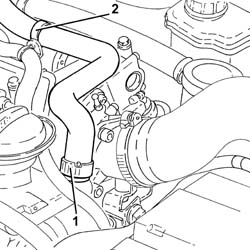
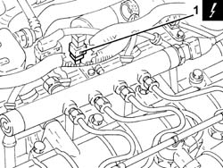
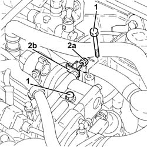
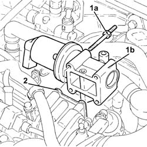
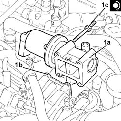
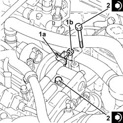

1080C24 E.G.R. SYSTEM SOLENOID - R + R
- Path
- Procedures > 10 ENGINE UNIT > 1080 EXHAUST EMISSION CONTROL SYSTEM > 1080C EXHAUST GAS RECIRCULATION SYSTEM (E.G.R.) > 1080C24 E.G.R. SYSTEM SOLENOID - R + R
- Kind
- repair procedure (removal / refitting; the operation number is the code)
- Applies to
- engines: 1.9 JTD 16V; all production periods
- Interactive page
- https://sloeber94.github.io/elrnDB-aGt/en/#/125001133
Applies to: engines: 1.9 JTD 16V; all production periods
 Removing
Removing
 Refitting
RefittingEnsure that the ignition key is in the OFF position, then disconnect the negative battery terminal (-).
Name | Connector | |
|---|---|---|
- | Battery | See A1B BATTERY ( BATTERY NEGATIVE ) |
Proceed with removal
- 1016A10 sound-proofing cover - r + r
.
1. Loosen the band and disconnect the engine oil vapour recovery pipe from the engine oil filler.
2. Release the engine oil vapour recovery pipe from the fastening band and move it aside.

Applies to: engines: 1.9 JTD 16V; all production periods
1. Disconnect the electrical connection from the E.G.R. valve.
Name | Connector | |
|---|---|---|
1 | EGR solenoid | See L30 EGR SOLENOID |

Applies to: engines: 1.9 JTD 16V; all production periods
1. Undo the bolts fixing the exhaust gas outlet pipe to the water/exhaust gas heat exchanger for the E.G.R. system, E.G.R. system solenoid valve side.
2. Undo the nuts (2a) and move the oil vapour recovery pipe mounting bracket (2b) aside.

Applies to: engines: 1.9 JTD 16V; all production periods
1. Undo the bolts (1a) and remove the EGR system solenoid (1b).
2. Remove the gasket.

Applies to: engines: 1.9 JTD 16V; all production periods
Refitting
Removing1. Place the E.G.R. system solenoid valve (1a) complete with gasket (1b) back in its housing and fasten it tightening the bolts (1c) to the recommended torque.
 | Fastening | Component | Ø | Value (daNm) |
|---|---|---|---|---|
1c | - | - | - | - |

Applies to: engines: 1.9 JTD 16V; all production periods
1. Place the oil vapour recovery pipe mounting bracket (1a) back in its housing and fasten it using the nuts (1b).
2. Tighten the bolts fixing the exhaust gas outlet pipe to the water/exhaust gas heat exchanger for the E.G.R. system, E.G.R. system solenoid valve side to the recommended torque.
| Fastening | Component | Ø | Value (daNm) |
|---|---|---|---|---|
2 | - | - | - | - |

Applies to: engines: 1.9 JTD 16V; all production periods
Connect the electrical connection to the E.G.R. valve.
Place the engine idle oil vapour recovery pipe in its seat and secure it using the band.
Connect the oil vapour recovery pipe to the engine oil filler and tighten the band.
Proceed with refitting
- 1016A10 sound-proofing cover - r + r
.
Connect the negative (-) battery terminal